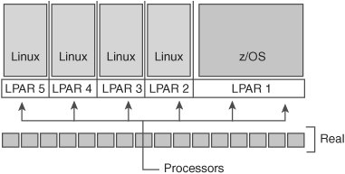
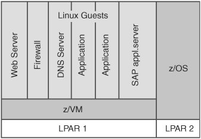

F.1. Linux on IBM zSeriesOn an IBM zSeries mainframe, Linux always runs within a virtual environment. The mainframe is divided into logical partitions (LPARs). Each LPAR can directly execute either a Linux kernel (see Figure F-1) or a number of virtual machine (VM) images. Figure F-1. Five LPARsone running z/OS, and the other four running Linux Virtual machine is the second way to create a virtual environment executing Linux. Figure F-2 shows several Linux instances running on a VM. Figure F-2. A zSeries mainframe with one LPAR running z/OS, and another LPAR hosting six VM guests, each running Linux A couple of important features are associated with this strategy, ranging from dynamic load balancing, capacity, and security issues to the issue of a high-speed virtual network between Linux images. In this network, the communicating parties behave as if they send and receive data via a real network. However, the data transfer is much faster and actually is performed by transferring data from one memory location to another. The fact that Linux on zSeries runs in a virtual environment does not affect the actual task of porting an application to Linux. An excellent overview and introduction are given in the book Linux on the Mainframe.[1]
|